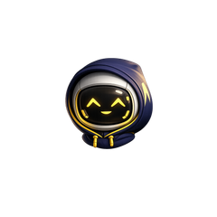
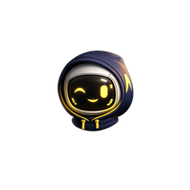
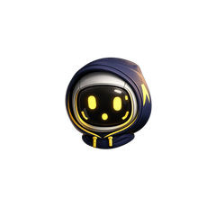
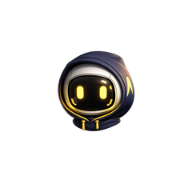
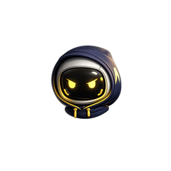

A 480×480 ESP32-S3 dashboard that shows your Claude Code usage in real time. Plug it in, flash it, point the daemon at it.
Connect via USB-C, then click below. Your browser does the rest.
Flash from UART. If flashing fails: hold BOOT, tap
RESET, release BOOT, then click Flash again
to force download mode.
A small background process that reads your Claude Code credentials, polls
Anthropic for rate-limit headers, and pushes live usage to the device
over BLE (or USB-C — pass --serial to auto-detect the board).
macOS / Linux: run chmod +x argus-daemon first.
On macOS, Gatekeeper may require right-click → Open the first time
(these builds are unsigned).